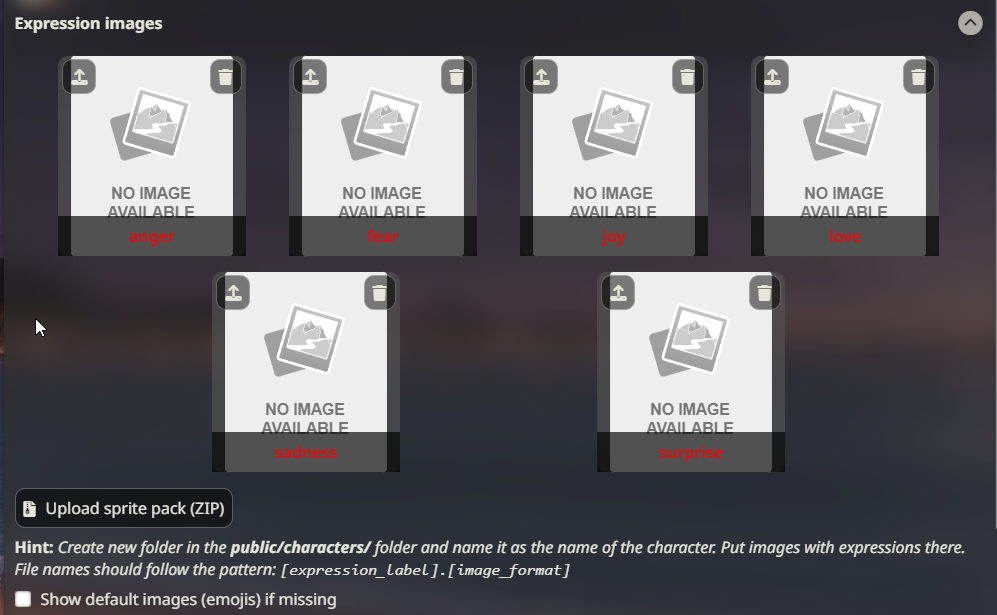

#
表达图像
#
什么是表达图像？
表达图像是您的 AI 角色的图像（也称为“精灵”），显示在聊天窗口的旁边（或后面）。
表达图像可以使用与 SillyTavern 主应用程序并行运行的分类模型。这允许根据 AI 最近聊天回复中表达的情感自动更改表达图像。
#
设置说明（离线模式，无额外功能）
打开扩展面板并展开“表情图片”部分。如果您打开了角色聊天，您将看到一组图像占位符。
 Expression Drawer 点击网格中每个图像左上角的“导入”按钮，并选择您想要应用于该情感的图像。这将把图像保存到
/data/<user-handle>/characters/(character_name_here)/文件夹中，文件名正确。要在您的 SillyTavern 窗口中显示图像，请在上传后点击网格中的图像。
#
classify模块是如何工作的？
classify模块使用一个小型的“情感解析”模型，该模型在SillyTavern主机上运行（例如，在您的PC上或colab机器上）。该模型接收来自AI的新输出，并检测文本表达的情感或情绪类型。虽然单条消息中可能表达多种情感，但该模型仅选择最可能的一种，并将其返回给SillyTavern。前端插件随后显示与该情感相关的图像。
#
手动更改表情
- 点击任何上传的表情图像（精灵），以在聊天界面附近（使用默认UI模式）或在屏幕中央（在视觉小说模式下）显示它们。
- 使用
/emote (name)斜杠命令或匹配的快速回复来设置精灵，而无需打开扩展菜单。
#
设置说明（本地分类）
- 确保您使用的是最新的发布或预发布版本的 SillyTavern。
- 打开扩展面板并展开“角色表情”插件菜单。
- 在分类源下拉菜单中选择“本地”。
- 这将启动从 HuggingFace Hub 下载分类模型的单次操作（约 ~100 Mb）。
- 生成任何消息以验证分类是否正常工作，并且精灵是否出现。您也可以检查服务器控制台以获取调试日志。
#
设置说明（附加内容）
- 确保已安装并运行 Extras，并启用
classify模块：python server.py --enable-modules=classify - 以与上述相同的方式导入表情图像。
- 在分类源下拉菜单中选择“Extras”。
- 每当 AI 向您发送响应时，适当的表情图像将自动显示。
#
设置说明（带 LLM）
- 连接到任何支持且已正确配置的文本生成 API。
- 以与上述相同的方式导入表达图像。
- 在分类源下拉菜单中选择“LLM”。
- 可选地，配置分类指令提示。
- 生成任何消息以验证分类是否正常工作以及精灵是否出现。您还可以检查服务器控制台以获取调试日志。
#
如何获得更多的表达选项？
#
本地
本地分类默认提供 28 种可能的图像标签：Cohee/distilbert-base-uncased-go-emotions-onnx
要使用 6 选项分类模型，请用文本编辑器打开 config.yaml 文件，并将 classificationModel 变量的值更改为 Cohee/bert-base-uncased-emotion-onnx
之后，重启 ST 服务器以重新下载模型。要恢复，请再次更改 config.yaml 中的值。
#
Extras API
Extras API 默认使用 6 选项的分类模型：nateraw/bert-base-uncased-emotion
还有一个 28 选项的模型：joeddav/distilbert-base-uncased-go-emotions-student
要使用此模型，您需要将 Extras 命令行更改为包含以下参数（前后有空格）：
--classification-model=joeddav/distilbert-base-uncased-go-emotions-student
#
支持哪些图像格式用于表达？
允许任何图像格式，包括 webp 和动画 gif。
最常见的格式是带有透明背景的 PNG 文件。
#
使用“默认表情”
(此功能仅在启用本地分类或连接Extras API时激活。无法手动显示默认表情图像。)
如果您没有角色的自定义表情图像，可以使用随基础SillyTavern安装包含的内置默认表情。这些是简单的表情符号风格图像。只需点击扩展面板中表情图像部分顶部的复选框。默认表情将与任何可用的自定义表情一起工作，并将在您的自定义图像集中缺少特定情感的图像时显示。
#
导入表情图像压缩文件
使用“导入 ZIP”按钮，您可以导入一个包含表情图像集合的压缩文件，这些图像将自动添加到您当前选择的角色的正确文件夹中。压缩文件必须具有扁平的内部结构（无子文件夹），并且单个图像应正确命名。导入压缩文件不会自动重命名任何图像以使其与情感匹配。
#
限制
#
显示名称（不是角色卡片文件名）决定使用哪个图像集
如果您有多个角色使用相同的显示名称，它们将使用相同的表情图像集。
如果您希望同名角色的每个版本使用不同的图像集，可以使用精灵文件夹覆盖。
#
如何设置覆盖
- 在
/data/<user-handle>/characters中创建一个任意名称的文件夹并将图像放入其中，例如/data/<user-handle>/characters/Boris。 - 打开与您想要覆盖精灵的角色的聊天。
- 在“精灵文件夹覆盖”输入框中输入覆盖文件夹的名称，然后点击“提交”。
- 精灵列表将重新加载，“精灵集”指示器应显示覆盖文件夹。
- 或者，您可以使用
/costume斜杠命令来实现相同的结果：/costume Boris。 - 通过在覆盖文件夹名称前添加反斜杠，它将解析为当前角色精灵文件夹中的子文件夹，例如
/costume \tracksuit对于名为Boris的角色将解析为/data/<user-handle>/characters/Boris/tracksuit文件夹。
#
自定义表情
- 您可以将自定义表情标签添加到列表中并上传精灵。
- 但是，它们不会被分类模型自动标记。您需要手动设置它们（可以通过点击或使用
/emote命令）。